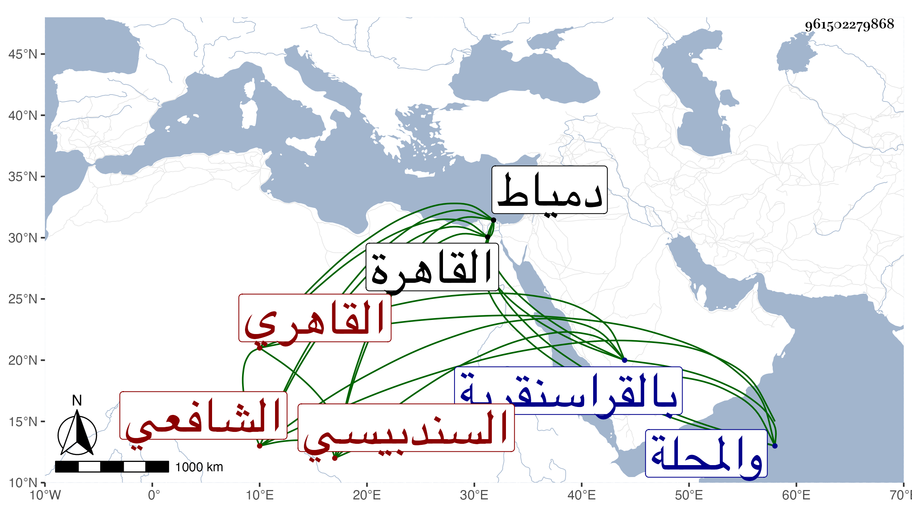

0902Sakhawi.DawLamic.ITO20230111-ara1.EIS1600.961502279868
Biography ID: 961502279868
391
عبد الرحمن بن محمد بن محمد بن يحيى الزين أبو الفضل بن التاج السندبيسي الأصل القاهري الشافعي والد المحب محمد الآتي ونزيل المؤيدية ويعرف بالسندبيسي . ولد كما كتبه لي بخطه سنة خمس وثمانين وسبعمائة تقريبا بالقاهرة ونشأ بها فحفظ القرآن وكتبا منها ألفية الحديث والسيرة للعراقي وعرض على جماعة واعتنى به أبوه وكان من أهل العلم فأحضره وهو في الثالثة على ابن الخشاب في شعبان سنة ثمان وثمانين مسند صهيب للزعفراني ووجدت في بعض الطباق المؤرخة بيوم عرفة سنة اثنتين وتسعين وصفه بأنه كان في الخامسة ولا يلتئم مع الذي قبله ، وسمع بعد ذلك على ابن حاتم والتنوخي والصلاح الزفتاوي وابن الشيخة والابناسي والبلقيني وابن الملقن والعراقي والهيثمي والمجد إسماعيل الحنفي والغماري والمراغي والسراج الكومي والحلاوي والسويداوي والتاج بن الفصيح وناصر الدين نصر الله الحنبلي القاضي والفرسيسي والشرف بن الكويك في آخرين كابن الجزري ، وأجاز له جماعة فمنهم من لم استحضر أنه سمع عليه المطرز والعزيز المليجي والشمس امام الصرغتمشية والقطب عبد اللطيف حفيد الحافظ الحلبي وأخوه عبد الكريم والعلاء بن السبع والشهاب الجوهري والتاج الخطيري والشمس الكفر بطناوي والشمس الاذرعي والتاج الصردي وابن المنفر والنجم البالسي والبدر النسابة وابن الميلق والبرشنسي والجلال نصر الله البغدادي الحنبلي والتقي الدجوي والفخر القاياتي والنور الهوريني وابن أبي المجد وأبو هريرة بن الذهبي وأبو الخير بن العلائي والشهاب بن العز ومحمد بن محمد بن داود بن حمزة وأبو بكر بن أحمد بن عبد الهادي وأحمد بن محمد بن راشد القطان وأبو بكر بن محمد بن عبد الرحمن المزي وابن قوام والبالسي ومن المغاربة ابن عرفة وأبو عبد الله محمد بن محمد بن أحمد السلاوي الماغوسي وابن خلدون وأبو القسم البرزلي وأبو عمرو القيرواني وخلق كالمجد اللغوي ، وهو مكثر سماعا وشيوخا وتلا لأبي عمرو وابن كثير وعاصم على الشمس النشوي وبحث الشاطبية على الشمس الشطنوفي وأخذ علم التفسير عن الشمس بن الديري وولده السعد والجلال البلقيني وغيرهم والفقه عن البرهانين الابناسي والبيجوري ومما قرأه عليه شرح البهجة وتحرير الفتاوي وابتهج مؤلفهما بذلك وكان البرهان يقول هو شارح عظيم وربما نبه على ما حصل السهو فيه ومصنفهما الولي العراقي وأكثر عنه والشمسين البرماوي ومما حضره عنده تقسيم المنهاج والشطنوفي والنحو عن الشموس البوصيري والبرماوي والشطنوفي والعجيمي الحنبلي والبدر الدماميني والأصول عن الشمس البرماوي والعز بن جماعة ولازمه في العلوم التي كانت تقرأ عليه المعقولات وغيرها ومن شيوخه في الدراية أيضا الكمال الدميري والصدر الابشيطي والزين الفارسكوري والشمس الغراقي والمجد البرماوي وطائفة وبعضهم في الأخذ عنه أكثر من بعض ، ولازم شيخنا في أماليه وغيرها حتى حمل عنه شرح البخاري وكتبه بخطه وكذا كتب عنه غير ذلك وهو من قدماء أصحابه وممن عينهم للمؤيدية وانتقل حينئذ من سكنه بالظاهرية القديمة فسكنها وكانت أغلب إقامته بخلوة له فيها ، وفضل وتقدم ودخل دمياط والمحلة ، وحج وولي تدريس التفسير بالحسنية برغبة شيخنا له عنه والحديث بجامع الحاكم والفقه بالقراسنقرية عوضا عن النوري على حفيد الولي العراقي وحدث باليسير سمع منه الفضلاء حملت عنه أشياء بقراءتي وقراءة غيري وحضرت دروسه بجامع الحاكم وقصده الطلبة للاشتغال وصار أحد الأعيان ، وكان إنسانا عالما صالحا خيرا ثقة متقنا بارعا في فنون مع توقف فهمه متقدما في العربية مشاركا في كثير من الفضائل خبيرا بالكتب كثير التردد لسوقها وربما كان يتجر فيها مع التواضع والانجماع عن الناس والمشي على طريقة السلف والمبالغة في التحري بحيث أفضى إلى نوع من الوسواس خصوصا في النية ، مات بعد أن تعلل بالربو وضيق النفس مدة في ليلة الأحد سابع عشر صفر سنة اثنتين وخمسين وصلى عليه من الغد في مشهد صالح ولما بلغته وفاة شيخنا ابن خضر وكان هو والمحلي من أخصائه قال لمن أخبره بها قتلتني ، ورأى بعضهم شيخنا المشار إليه في المنام وهو واقف وسئل فقال أنتظر جنازة السندبيسي رحمهما الله وإيانا .
